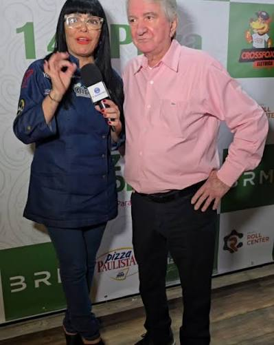
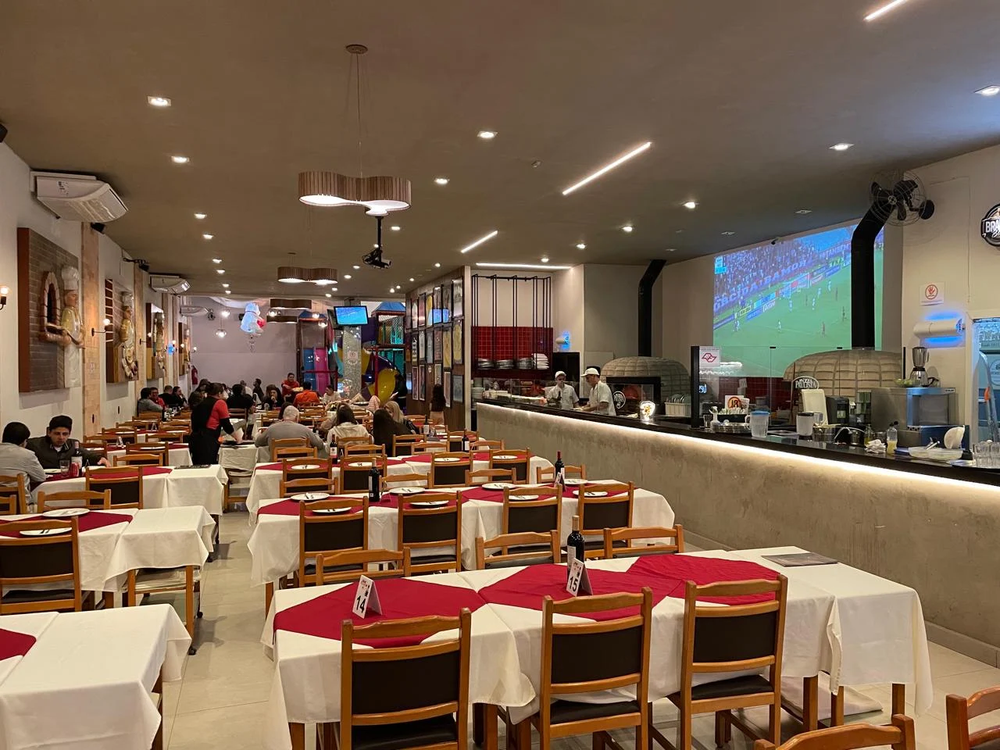
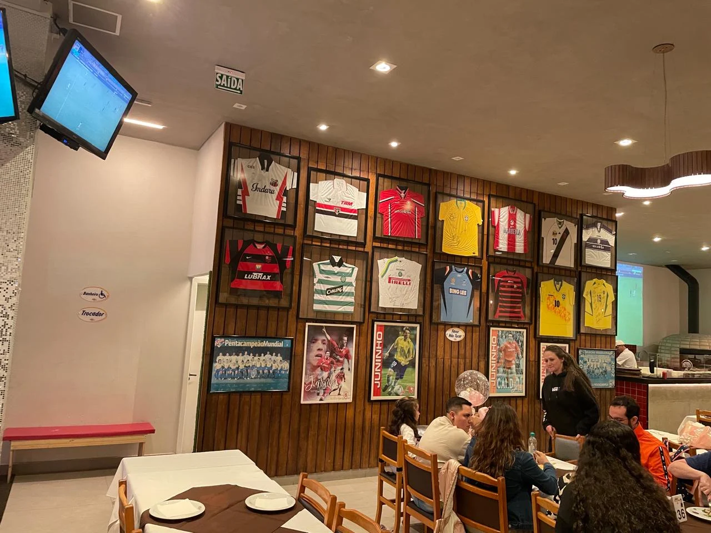
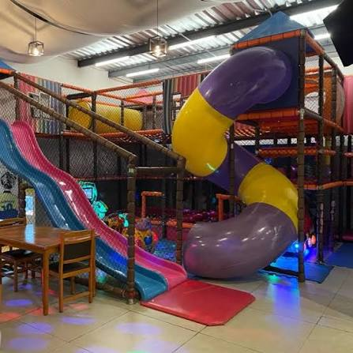

GESTÃO E CONTINUIDADE
Gislene Giroldo
À frente da gestão da Pizza Paulista 10, Gislene participa da continuidade de uma história familiar construída desde 1999.
Uma história construída em família, marcada pela paixão pelo futebol e pelo prazer de reunir pessoas ao redor de uma boa pizza.

A Pizza Paulista 10 nasceu em 1999, da união entre a paixão pela gastronomia e pelo futebol. Fundada por Oswaldo Giroldo e seu filho, o ex-jogador Juninho Paulista, a pizzaria construiu sua trajetória no coração do Tatuapé.
Administrada pela própria família Giroldo, a pizzaria tem como Gislene Giroldo sua principal gestora, ao lado de seu pai, Sr. Oswaldo Giroldo, e de seu irmão, Juninho Paulista.
Mais do que um restaurante, representa uma história familiar construída ao longo de décadas, conectando gastronomia, futebol e comunidade.
Uma história construída por pessoas que compartilham suas raízes e mantêm viva essa tradição.
À frente da gestão da Pizza Paulista 10, Gislene participa da continuidade de uma história familiar construída desde 1999.

Fundador da Pizza Paulista 10 e figura central na origem dessa trajetória familiar.
Ex-jogador de futebol e um dos fundadores da pizzaria, representa a conexão da família com o universo esportivo.
"Uma história que começou em família e continua reunindo pessoas ao redor da mesma paixão."
Uma trajetória construída ao longo de décadas.
Uma história conduzida pela própria família Giroldo.
Uma conexão que faz parte da identidade da pizzaria.
Iniciativas que aproximam pessoas em torno de uma causa.
A Pizza Solidária é uma iniciativa que reúne jogadores de futebol e convidados em torno de um propósito maior: contribuir com o Hospital Cruz Verde.
Por meio de encontros beneficentes e leilões de itens especiais, como camisas autografadas e fotografias históricas do futebol, a iniciativa busca arrecadar recursos para apoiar o trabalho da instituição.
Conheça o Hospital Cruz VerdeUm pouco do universo da Pizza Paulista 10.



Fique por dentro das novidades da Pizza Paulista 10.
Será um prazer fazer parte dos seus momentos especiais.
Rua Serra de Juréa, 488
Cidade Mãe do Céu — Tatuapé
São Paulo — SP
CEP 03323-020
(11) 98743-6014